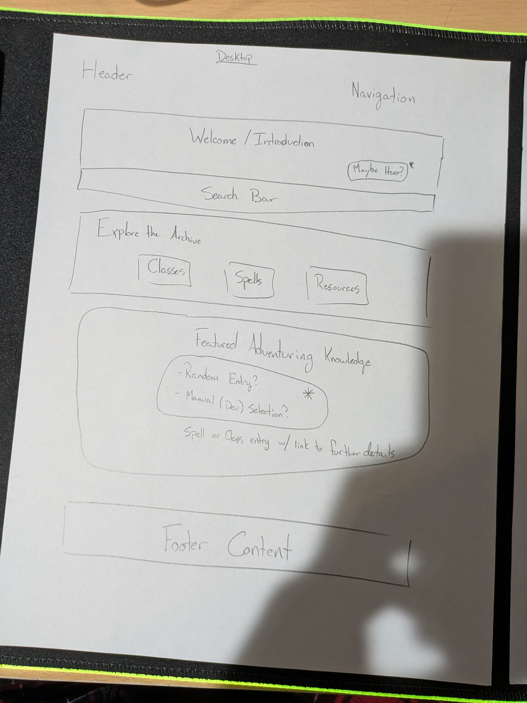
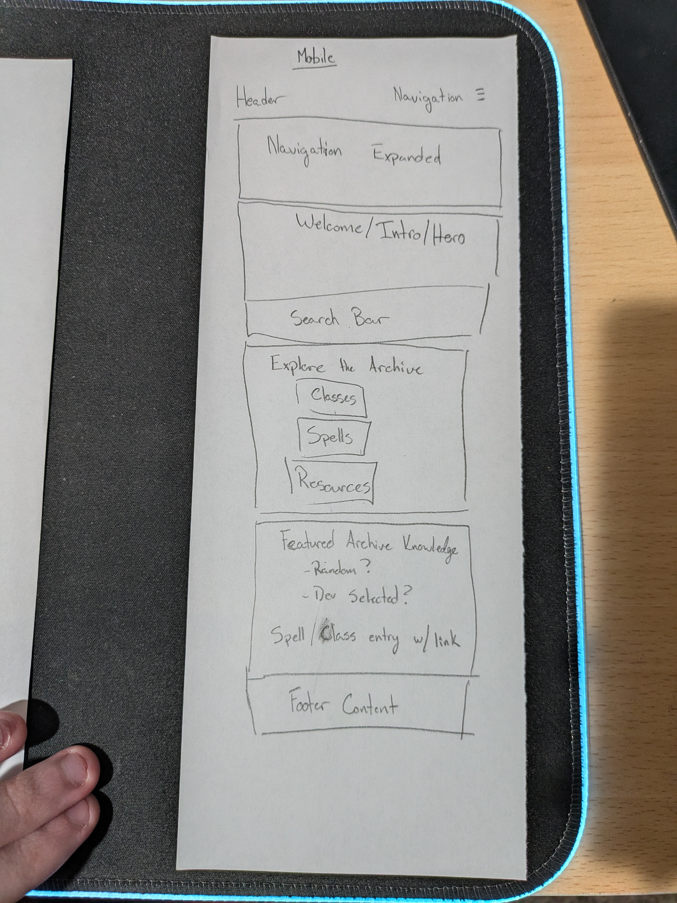

The Adventurer's Archive
The name represents a centralized collection of information for Dungeons and Dragons players. An archive is a place where knowledge is collected and organized, which reflects the website's purpose as a reference resource.
Site Purpose
The Adventurer's Archive is a reference website designed to help Dungeons and Dragons players explore and understand game content. It provides organized information about character classes, subclasses, spells, and other adventuring resources in one convenient location.
Scenarios
- I'm creating a new character. Where can I compare the different classes and subclasses to decide which one fits my playstyle?
- My character just reached a new level. Where can I find spells available to my class and learn what they do?
Color Schema
| Color | Hex Value | Intended Use |
|---|---|---|
| Forest Green | #263D35 | Header, Navigation, and Headings |
| Warm Parchment | #F4EFE5 | Primary page backgrounds |
| Antique Gold | #B08D57 | Decorative accents and highlights |
| Dark Walnut | #2B2118 | Body text |
| Light Parchment | #E8D5B5 | Cards and secondary surfaces |
Typography
| Font | Intended Use |
|---|---|
| Cinzel | Headings and Titles |
| Lora | Body text and general content |
Wireframes
Desktop

Mobile
